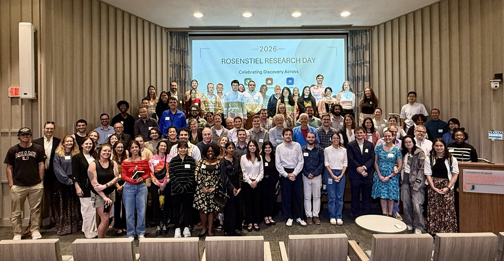

School-Wide Annual Event
Rosenstiel Research Day2027
Celebrating discovery across Earth, ocean, and atmospheric sciences.
A full day of research from students, postdocs, staff, and faculty across the entire Rosenstiel School.
Presenting? Submitting an abstract registers you automatically, no separate registration needed. Not presenting? Use the audience-only sign-up so we can count you for lunch.
A note from the Dean
“Rosenstiel science spans the deep ocean to the upper atmosphere, and our impact comes from the seams between those communities. Research Day puts that breadth in one room, in one day, and makes it visible to the whole school.”
About the Day
One day. The whole school.
Rosenstiel Research Day is the annual school-wide gathering of the Rosenstiel School of Marine, Atmospheric, and Earth Science. For one day, students, postdocs, staff, and faculty come together for a full program of oral presentations, flash talks, and dedicated poster sessions spanning the school's science, from the deep ocean to the upper atmosphere.
Scope of Science
From the deep ocean to the upper atmosphere.
Rosenstiel research spans the full Earth system, across the school's five departments and its research centers, including the NOAA-partnered Cooperative Institute for Marine and Atmospheric Studies (CIMAS). Research Day brings these communities under one roof for a single day of cross-disciplinary exchange.
Program at a Glance
What the day includes.
Oral Talks
Curated talks in themed sessions, spotlighting student and postdoc research.
Flash Talks
Quick poster teasers, an optional add-on for poster presenters, leading into the poster sessions.
Poster Sessions
Standalone viewing blocks in SALT, protected time, with refreshments.
Awards
Peer-voted recognition awards celebrating outstanding research and presentation excellence.
Mark Your Calendar
The path to Research Day.
From the save-the-date through the event itself.
-
Oct 22, 2026
Save the Date
-
Nov 16, 2026
Submission opens
-
Dec 15, 2026
Reminder #1
-
Jan 12, 2027
Reminder #2
-
Jan 15, 2027
Abstract submission deadline · 5pm ETAbstract & faculty sign-up deadline · 5pm ET
-
Jan 29, 2027
Audience sign-up closes · titles finalized
-
Feb 15, 2027
Program announced
-
Apr 2, 2027
Research Day
- Thu, Oct 22, 2026Save the Date – Rosenstiel Research Day
- Mon, Nov 16, 2026Abstract submission opens
- Tue, Dec 15, 2026Reminder #1 to school
- Tue, Jan 12, 2027Reminder #2 to school
- Fri, Jan 15, 2027 · 5:00 pm ETAbstract submission closesAbstract submission and faculty sign-up close
- Fri, Jan 29, 2027Audience sign-up closes; titles finalized
- Mon, Feb 15, 2027Program announced
- Fri, Apr 2, 2027Rosenstiel Research Day
Research & Presentation Excellence
Awards that recognize the best of Rosenstiel.
A Tradition of Excellence
Four awards, by attendee vote.
Winners are chosen by attendee vote through the post-event survey and announced about two weeks after the event – people's choice, best oral presentation, best poster, and the cross-currents award for bridging disciplines.
People's Choice
Voted by attendees for the presentation that most captured the audience's attention.
Best Oral Presentation
For the oral talk that best combined scientific excellence with clear communication.
Best Poster
For the poster that pairs scientific depth with standout clarity and discussion.
Cross-Currents Award
For the work that best bridges two departments or disciplines across the school.
Who should participate. 🎉 Everyone Is Invited
Students
Graduate and undergraduate students are strongly encouraged to present as a talk, flash talk, or poster. Several awards recognize outstanding student work.
Postdocs & Staff
Share recent work, mentor student presenters, and connect with colleagues from across the school. Postdoc and staff contributions are eligible for awards.
Faculty
Present a poster and chair a session.Present a poster, chair a session, and vote on the awards. Your presence across talks, posters, and the closing social shapes the day. Sign up on the Faculty page.

Rosenstiel Research Day 2026
Scan to Join
Scan with any phone camera to open the Rosenstiel Research Day site.
Questions?
Get in touch.
Email Guoqing Lin, Associate Dean of Research, at glin@miami.edu.
Rosenstiel Research Day
Visit the Site
All the details, program, submission, sign-up, key dates.